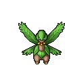
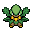

Pokédex / #357

Tropius #357
GrassFlying
It flies by flapping its broad leaves and gives the sweet, delicious fruit around its neck to children.
Generation 3 · Hoenn

Stats
| Attack | 68 | |
|---|---|---|
| Defense | 83 | |
| Sp. Atk | 72 | |
| Sp. Def | 87 |
In the wild
| Wild level | 70–80 |
|---|---|
| HP | 99 |
| Experience | 15 |
| Egg groups | Grass, Monster |
Evolution
- Does not evolve.
Moves
| Level | Move | Type | Category | Power | Energy | Cooldown | Effect | |
|---|---|---|---|---|---|---|---|---|
| 1 | Tackle | Normal | Physical | 15 | 15 | 1s | Tackle is one of the most common and basic moves a Pokemon learns. It deals damage with no additional effects. | |
| 5 | Razor Leaf | Grass | Physical | 18 | 60 | 7s | Razor Leaf deals damage and has an increased critical hit ratio. | |
| 10 | Gust | Flying | Special | 40 | 40 | 9s | Gust deals damage and has no secondary effect. | |
| 15 | Stomp | Normal | Physical | 65 | 75 | 9s | Stomp deals damage and has a 30% chance of causing the target to flinch. | |
| 20 | Bullet Seed | Grass | Physical | 25 | 85 | 17s | Bullet Seed does damage, hitting 2-5 times per use. | |
| 25 | Air Slash | Flying | Special | 75 | 80 | 17s | Air Slash deals damage and has a 30% chance of causing the target to flinch. | |
| 30 | Synthesis | Grass | Status | – | 150 | 120s | Synthesis restores the user's current HP based on the weather conditions. Under normal conditions Synthesis will restore ½ of the user's total HP. | |
| 35 | Body Slam | Normal | Physical | 85 | 85 | 13s | Body Slam deals damage and has a 30% chance of paralyzing the target. | |
| 40 | Aerial Ace | Flying | Physical | 60 | 60 | 14s | Aerial Ace deals damage and ignores changes to the Accuracy and Evasion stats. | |
| 45 | Grass Knot | Grass | Special | 80 | 80 | 12s | The user snares the target with grass and trips it. | |
| 50 | Leaf Storm | Grass | Special | 13 | 140 | 32s | Leaf Storm deals damage but lowers the user's Special Attack by two stages after attacking. | |
| 55 | Energy Ball | Grass | Special | 90 | 95 | 15s | Energy Ball deals damage and has a 10% chance of lowering the target's Special Defense by one stage. | |
| 60 | Solar Beam | Grass | Special | 120 | 125 | 27s | Solar Beam deals damage but the user can't attack on the next turn. | |
| 65 | Fly | Flying | Physical | 90 | 110 | 20s | Fly deals damage and has no secondary effect. |
Field abilities
StrengthRock SmashCutFlashFlyFindHeadbutt
Special abilities
ChlorophyllSolar Power
Egg moves
CurseDragon DanceHeadbuttLeaf BladeLeaf StormLeech SeedNature PowerRazor WindSynthesis
Technical machines
Aerial AceBullet SeedDouble TeamEarthquakeEnergy BallHyper BeamProtectRestRoarSafeguardSolar BeamSteel WingSubstituteSwords DanceToxic
Drops
| Item | Amount | Chance | |
|---|---|---|---|
| seed | 1–7 | 85.7% | |
| bamboo leaves | 1 | 85.7% | |
| frostbite herb | 1 | 85.7% | |
| leaf pendant | 1 | 42.9% | |
| leaf | 1 | 23.8% | |
| cure herb | 1 | 21.4% | |
| thorn seed | 1 | 21.4% | |
| bunch of ripe rice | 1 | 17.1% | |
| sharp razor | 1 | 17.1% | |
| gracidea | 1 | 15.9% | |
| revival herb | 1 | 15.9% | |
| hard claws | 1 | 10.7% | |
| forbidden fruit | 1 | 8.57% | |
| onigiri | 1–5 | 5% | |
| lion's mane flower | 1 | 2.14% | |
 | tropius doll | 1 | 0.1% |
| Meadow Plate | 1 | 0.05% | |
| Sky Plate | 1 | 0.05% | |
| held miracle seed | 1 | 0.01% | |
| held sharp beak | 1 | 0.01% | |
| TM 21 | 1 | 0.01% |